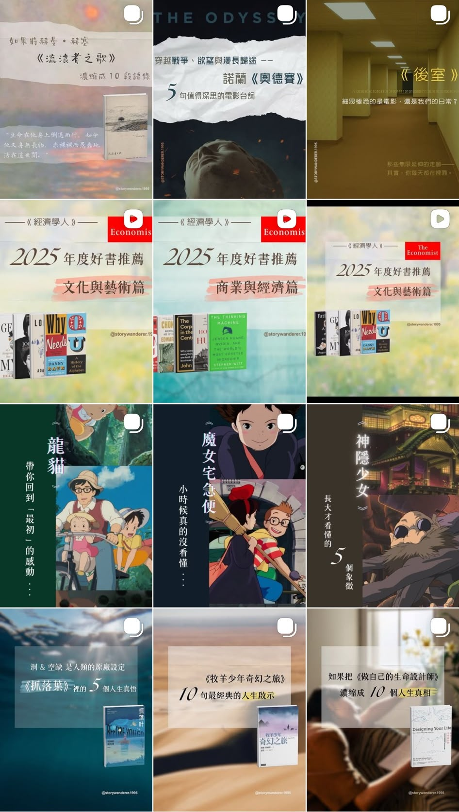
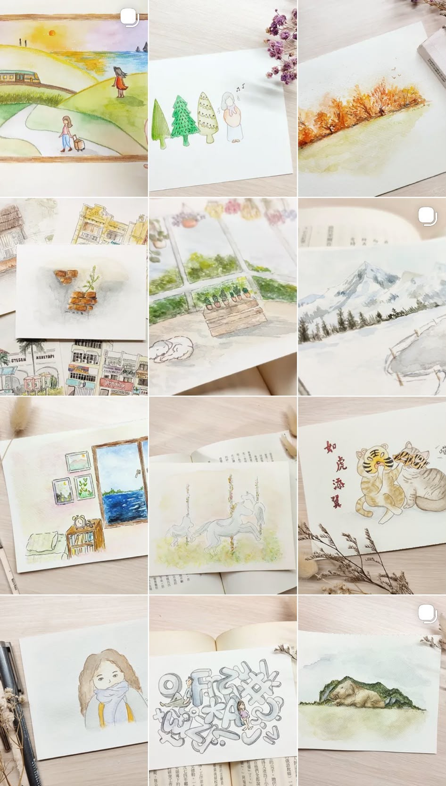

PRODUCT MARKETING
產品行銷
產品定位 · 賣點提煉 · 中文文案撰寫
配合季節性新品上市，從產品特色、節慶情境與目標受眾切入， 設定產品賣點，撰寫具品牌調性的社群貼文、EDM 等行銷內容。
RESEARCH · STRATEGY · COMMUNICATION
讓品牌有溫度，讓故事被聽見
Stories with heart. Brands that resonate.
從資訊研究、內容策劃到 AI 輔助流程設計， 我關注內容如何被理解、轉化與傳達， 並透過內容設計協助組織更有效地溝通與連結。
CONTENT PHILOSOPHY
不同目的與語境，自有不同的敘事策略， 而我始終從一件事做起：聆聽。
我相信，成功的內容始於聆聽—— 寫文案從來不是玩文字遊戲， 是理解受眾、洞察市場、辨識品牌價值， 再找到最準確的表達方式， 讓品牌有溫度，讓故事被聽見。
文案人的眼界、洞察與轉譯功力： 如何化繁為簡、直抵人心—— 正是目前 AI 難以取代之處。
COMMERCIAL CONTENT
PRODUCT MARKETING
產品定位 · 賣點提煉 · 中文文案撰寫
配合季節性新品上市，從產品特色、節慶情境與目標受眾切入， 設定產品賣點，撰寫具品牌調性的社群貼文、EDM 等行銷內容。
TRANSCREATION
品牌語調梳理 · 設計理念轉譯 · 中文文案撰寫
根據英文設計理念，梳理材質特色、設計美學與品牌價值， 轉譯為符合台灣中文語境，且敘事語調一致的品牌文案。
CONTENT MARKETING
產業研究 · 內容策劃 · EDM
關注產業趨勢與潛在客戶關心的議題， 規劃定期 EDM 主題，將產業動態轉化為具前瞻性的知識型內容， 強化品牌專業形象並支持後續溝通。
SOCIAL MEDIA STRATEGY
產品行銷 · 品牌內容 · 活動推廣
依產品、品牌動態與活動需求規劃社群內容， 涵蓋產品行銷、品牌內容、活動推廣與即時報導， 並透過成效指標持續檢視內容表現與導流效果。
INDEPENDENT PROJECTS

CONTENT · CULTURE · STORYTELLING
@storywanderer.1995
以書籍、電影與文化內容為素材， 從選題、觀點提煉，到輪播圖文設計皆獨立完成， 將長篇內容轉化為易讀、具情感共鳴的社群內容。
內容策劃 · 輪播圖文設計 · 文案撰寫
Instagram ↗
ILLUSTRATION · VISUAL STORYTELLING
@aurorainherdrawer
以療愈系原創插畫為核心， 結合圖像、文字與生活觀察， 發展具辨識度的個人內容風格。
插畫創作 · 圖文敘事
Instagram ↗CONTENT CAPABILITIES
Content Strategy
B2B & B2C Content
Email Marketing
Market Intelligence
Transcreation
AI-assisted Workflow
FULL PORTFOLIO
歡迎來信索取完整內容作品集。